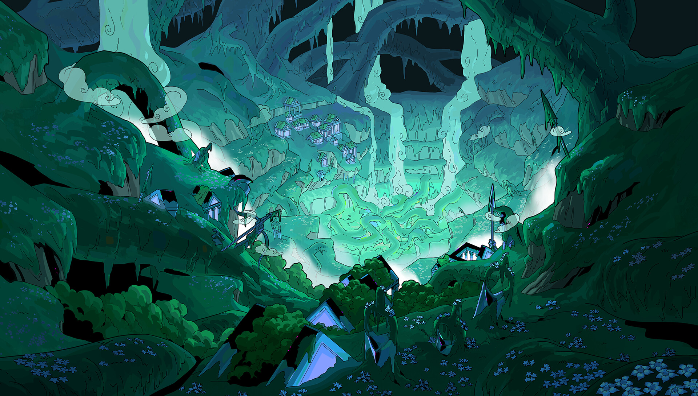
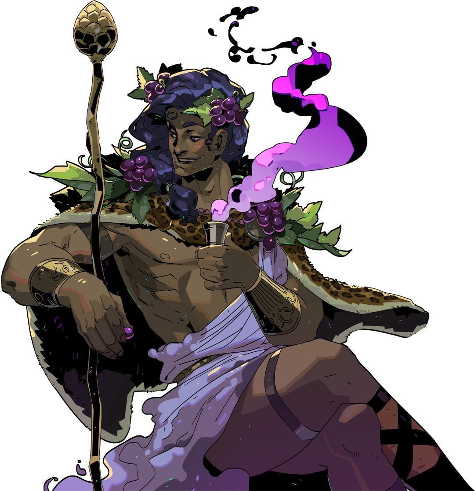
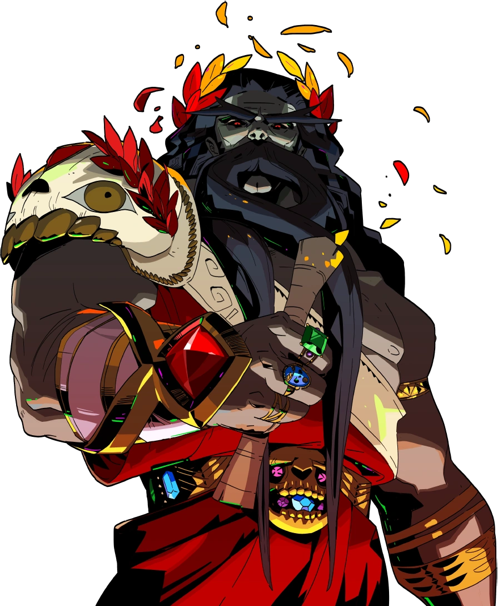

Conheça HADES
Hades é um jogo roguelike da Supergiant Games, criadores de Bastion, Transistor e Pyre. Desafie o deus dos mortos enquanto você batalha para sair do Submundo na pele de Zagreus!
Na pele do imortal Príncipe do Submundo, você usará os poderes e as armas míticas do Olimpo para se libertar das garras do deus dos mortos, enquanto se fortalece e descobre mais sobre a história a cada tentativa única de fuga.
A apresentação rica e atmosférica e a combinação única de jogabilidade e narrativa, essenciais para os jogos da Supergiant, estão aqui com força total: ambientes espetaculares pintados à mão e uma trilha sonora original emocionante dão vida ao Submundo.
Zagreus
Zagreus, Príncipe do Submundo, é o filho de Hades e é o protagonista do jogo Hades.Zagreus sempre teve a sensação de que não pertence à Casa de Hades. Em algum momento antes do início do jogo, ele decide, contra a vontade de seu pai, escapar do Submundo, não importa quantas tentativas isso possa exigir dele. Ele é auxiliado e encorajado em sua jornada, principalmente por sua tutora Nyx e seu mentor Achilles. Outros fora da Casa de Hades, como Sísifo, Caronte e os Olimpianos, às vezes também oferecem sua ajuda.
Conhecendo o universo de Hades
A casa de Hades
A Casa de Hades está localizada nas profundezas mais profundas do submundo. É a propriedade pessoal do Senhor Hades, que reside aqui com sua família e equipe. O layout da Casa foi projetado por Dédalo. Sombras são frequentemente vistas circulando, reclamando de suas vidas e mortes, ou fazendo parte da procissão que Hades tende como parte de seus deveres.
"...Tendo sido designado pelas Moiras para reinar sob a terra pela eternidade, o Mestre foi agraciado com um local de residência permanente na base de seu domínio, além de uma grande variedade de responsabilidades para com os mortos. Apenas ouvi histórias sobre o Olimpo e suas alturas gloriosas, suas colunas brilhantes, seus banquetes... a Casa de Hades, imagino, deve ser mais ou menos o oposto em todos os aspectos. O Mestre não poupa elogios para a morada montanhosa de sua família, e observa, em vez disso, as muitas maneiras pelas quais sua Casa é muito mais funcional, superior até mesmo. Certamente, a Casa está bem equipada e acomoda não apenas o Mestre, mas alguns de seus colaboradores e assistentes mais próximos, eu incluso. Entendo que este lugar existia em uma forma mesmo antes de o Mestre se estabelecer aqui. Mas certamente, ele o tornou seu próprio, e todos sentimos sua influência em cada canto."
Tartarus
Tartarus é um bioma interno logo fora da Casa de Hades. É um labirinto de masmorras e corredores que abriga as almas daqueles que cometeram crimes e pecados em suas vidas. O Rio Styx flui através e ao redor de Tartarus, desaguando em uma piscina dentro da própria Casa de Hades. Tartarus é o primeiro bioma pelo qual Zagreus deve lutar para escapar do Submundo.
...As partes mais profundas do Submundo não são reservadas apenas para a morada do Mestre, mas para o benefício de todos os desgraçados que, ao longo de suas vidas, falharam em deixar qualquer tipo de impressão positiva para trás. Tartarus é um dos designs mais elaborados do Mestre, construído não apenas para conter os mortos desgraçados, mas para oprimi-los, puni-los. O Mestre não tem piedade pelos desgraçados aqui; ele diria que tiveram sua chance e conheciam os riscos de levar vidas odiosas. A punição é tudo o que resta para almas como estas; não há mais chance de reabilitação, apenas sofrimento. Alguns trabalham miseravelmente, enquanto outros recebem tratamento dedicado e prático, cortesia dos supervisores do Mestre, que garantem que Tartarus sempre mantenha a reputação que possui.
Asphodel

Asphodel, antes conhecido como os Prados de Asphodel, é uma coleção desolada de ilhas rochosas no meio de um mar de fogo além de Tartarus. A viagem entre essas ilhas é feita por meio de pequenas jangadas de ossos. Asphodel é o segundo bioma que Zagreus encontra durante suas tentativas de fuga.
'...Entre os muitos motivos pelos quais é melhor para os mortais se esforçarem para tratar uns aos outros de maneira razoável está o fato de que, depois de viverem suas curtas vidas, podem acabar presos uns aos outros pela eternidade nos prados de Asphodel. Afinal, existem apenas alguns destinos para a grande maioria dos mortais. Os piores são enviados para Tartarus; os maiores, para Elysium; e todos os outros, para lá. Asphodel é a região mais vasta do Submundo, não muito diferente das planícies elevadas da superfície em certos aspectos, exceto pela presença do sempre ardente Rio Phlegethon. Algumas sombras de Asphodel expressam preocupação de que o rio ameace inundar, de engolfar os prados em fogo e cinzas. Na Casa de Hades, minimizamos a probabilidade disso acontecer; mas estamos mal equipados para lidar com o resultado, caso isso aconteça. No máximo, podemos relocar rapidamente as sombras que desejam deixar os arredores de Asphodel.'
Elysium

Elysium (também conhecido como Campos Elísios) é a seção do submundo reservada para aqueles que foram grandes heróis ou particularmente amados pelos deuses em vida. É visto como um paraíso eterno, onde guerreiros, heróis e reis revivem seus dias vivos se engajando em combates recreativos. Elysium é preenchido com estruturas de cristal eternas e estátuas retratando vários heróis, todas cobertas de musgo. O rio do esquecimento, Lete, flui pela área, amortecendo as memórias e antigas dores das sombras que lá residem.
'...Certamente, alguns mortais desejariam viver para sempre se pudessem. No entanto, para os sensatos, passar uma eternidade nos campos de Elysium seria a sua escolha primordial; viver para sempre naquele lugar bonito, junto apenas com as almas mais grandiosas que já viveram. Elysium é a região mais exclusiva e escassamente povoada do Submundo e, ainda assim, é talvez a mais conhecida (embora Tartarus também tenha uma considerável notoriedade). Apenas os grandes entram. Muitos mortais lutam pela grandeza durante toda a vida, sem perceber que não existe uma fórmula existente para isso. Nem mesmo uma definição específica para isso. A grandeza é avaliada aqui, por vários juízes encarregados de considerar os muitos casos que o Mestre mesmo não pode ver pessoalmente. Portanto, deve-se dizer que alcançar Elysium não é uma pequena façanha. Uma vida inteira dedicada a realizar feitos impressionantes é a melhor preparação que posso pensar.'
O templo de Styx
O Templo de Styx é o portal do Submundo e atua como a barreira entre o mundo da superfície e a terra dos mortos. No fundo do templo, o vigilante cão infernal Cerberus assume seu posto, devorando qualquer alma que tente sair. O Templo é o quarto e último bioma que Zagreus deve atravessar para escapar do Submundo, depois de sobreviver aos perigos de Elysium. Este bioma é estruturado de forma diferente dos três biomas anteriores do jogo, apresentando cinco alas de pequenas câmaras com recompensas oferecidas apenas na sala final de uma ala.
'...Apesar da infâmia do Rio Styx entre os mortais que habitam na superfície, ainda respirantes, o rio não é encontrado em nenhum mapa. Os mortais concordam que é melhor descobrir de onde o Rio Styx se origina apenas quando levados até lá. Aqueles de nós que vivíamos na superfície e fizemos a jornada aqui através do Styx agora sabemos que as águas cortam uma fachada esculpida de pedra, sua aparência modesta escondendo um vasto e intrincado templo construído em louvor e medo do Mestre, o deus dos mortos. Desde a construção do templo, no entanto, ele caiu em um estado de relativo abandono; talvez os mortais que o ergueram tenham sido todos assustados pelo feroz Cérbero, que uma vez guardava os portões. Mas agora, o lugar está tomado por criaturas de um tipo muito diferente, inclinadas inexplicavelmente a desfigurar toda a propriedade, muito para a frustração infinita do Mestre.'
Nesta jornada você não estará sozinho...
Um elenco repleto de vozes de personagens pitorescos e impressionantes está esperando para conhecê-lo! Aprimore seu relacionamento com eles e vivencie centenas de eventos únicos da história enquanto aprende sobre o que realmente está em jogo para esta grande e disfuncional família.
ZEUS
"Saudações, jovem! Veja, seu pai sempre foi bastante difícil, e ele não tem dado notícias há um bom tempo. Você terá um lar melhor onde pertence, aqui no Olimpo! E para ajudá-lo em sua jornada, receba minha bênção."
Zeus é o deus do céu e do trovão, e o governante dos Deuses do Olimpo. Zeus é o irmão mais novo de Hades e o tio de Zagreus. Ele oferece favores a seu sobrinho que concedem a ele habilidades como raios encadeados ou golpes de relâmpago. Os favores de Zeus são excelentes para causar danos a grupos de inimigos, pois os efeitos de raios encadeados saltam entre os inimigos, e os golpes de relâmpago podem atingir vários inimigos ao mesmo tempo.
POSEIDON
Poseidon é o deus do mar e dos cavalos, e ocasionalmente referido pelo epíteto de "Agitador da Terra". Assim como muitos de seus colegas do Olimpo, ele oferece favores a Zagreus que aumentam significativamente o dano de suas habilidades, além de causar o efeito de Repulsão. Os favores de Poseidon oferecem o terceiro maior aumento percentual bruto de dano em Hades, além da capacidade de empurrar inimigos, causando dano adicional ao colidirem com paredes ou armadilhas.
"Olá, pequeno Hades! Reconhece o seu tio, não é mesmo? Temos muito o que conversar, mas antes de tudo, você precisa sair desse sombrio Submundo! Quanto a mim, vou ver se consigo agitar um pouco as coisas para facilitar o seu avanço!"
ATHENA

"Salve, nobre Primo. Agora vamos tirá-lo desse lugar miserável. Eu verei a todos nós no Olimpo fazendo nossa parte, começando aqui comigo."
A Atena é a Deusa Olímpica da sabedoria e da guerra estratégica. Ela oferece favores a Zagreus que fazem com que suas habilidades Desviem os ataques inimigos. Além disso, ela também oferece favores que reduzem o dano ou aumentam outras opções defensivas. Atena oferece excelentes opções defensivas com seus favores, protegendo você do dano com a habilidade de desviar projéteis e ataques corpo a corpo inimigos, além de reduzir o dano que você sofrerá durante uma corrida.
ARTEMIS
Artemis é a Deusa Olímpica da caça e irmã gêmea mais velha de Apolo. Ela oferece favores a Zagreus que concedem a suas habilidades a chance de causar dano Crítico. Além disso, ela também oferece favores que melhoram as habilidades de Lançamento. Embora o bônus de dano oferecido em seus favores seja menor em comparação com outros Deuses, os acertos críticos que eles oferecem causam três vezes o dano de uma habilidade normal, concedendo um dos melhores ganhos gerais de DPS oferecidos por qualquer deus ou deusa. Os favores de Artemis, quando combinados adequadamente com outros favores, têm o potencial de causar um dano tremendo. Além disso, seus favores relacionados ao Lançamento aumentam sua munição total ou adicionam um projétil, permitindo ainda mais uma poderosa ferramenta à distância.
"Ouvi falar sobre você. Olha, eu não sou como todos os outros no Olimpo. O poder da caça me faz companhia, então talvez também possa te ajudar."

AFRODITE
"Olá, olá, aí, pequeno semideus. Tenho que dizer que você é um espécime interessante, e por isso, decidi que vou te ajudar por enquanto. Você está interessado?"
A Afrodite é a Deusa Olímpica do amor e da beleza. Ela oferece favores a Zagreus que infligem sua maldição de status característica, a Fraqueza, ou tornam os inimigos mais suscetíveis a danos. Os favores de Afrodite não apenas aumentam significativamente o seu dano, oferecendo os maiores aumentos de dano aditivo para seu Ataque e Especial, mas também sua capacidade de sobrevivência, tornando os ataques inimigos menos eficazes enquanto você os enfrenta. Devido aos efeitos de Fraqueza serem fáceis de infligir, Afrodite também possibilita a sinergia com a melhoria do Espelho da Noite, o Status Privilegiado.
ARES
Ares é o Deus Olímpico da guerra. Ao contrário de Atena, mais orientada para a estratégia, o domínio de Ares são os aspectos físicos, violentos e selvagens da guerra. Ele oferece favores a Zagreus, que podem aumentar o dano de suas habilidades, infligir sua maldição de status característica, o Destino, ou criar Fendas de Lâmina que causam dano rápido aos inimigos que as atravessam.
"Você tem um espírito de luta bastante impressionante, devo dizer. Muito intrigante, e ainda assim, não é surpresa para alguém nascido no próprio inferno. Saia de lá e me conte tudo sobre isso. Eu sou um colega estudante da morte, sabe."

DIONISIO

"Eeeei, e aí, Zag, cara, como vai? Olha só, você tem que chegar aqui com o resto da galera logo, estamos te guardando um lugar! Deixe-me ver o que posso fazer para deixar a vida um pouco mais doce para você enquanto isso!"
Dionísio é o Deus Olímpico do vinho e da loucura, e primo de Zagreus. Ele oferece favores a Zagreus baseados em sua maldição de status característica, Ressaca, diminuindo e atordoando inimigos, além de vários favores temáticos relacionados à bebida. Dionísio oferece habilidades de dano ao longo do tempo fortes em quase todos os seus favores ofensivos. No entanto, ele também pode dar a Zagreus habilidades de utilidade fortes na forma de atordoamentos, lentidões, curas e aumento de saúde, efeitos de redução de dano e itens.
HERMES
Hermes é o Deus Olímpico do comércio, da astúcia e das viagens, além de ser o mensageiro dos deuses. Ele trabalha com Caronte para guiar as almas para seu lugar adequado no Submundo, com Hermes entregando as almas para Caronte, para que ele as transporte pelo Estige até o resto do caminho (dando a Hermes o título de psicopompo, ou alguém que guia as almas para a vida após a morte, título que ele e Caronte compartilham). Ele oferece favores que aumentam a velocidade de Zagreus de várias maneiras, incluindo velocidade de ataque e velocidade especial. Seus favores também podem melhorar o dash e a recuperação do lançamento de Zagreus.
"Ei, chefe, te encontrei, beleza. Hermes, às suas ordens. Um prazer! Você é o assunto de toda o Olimpo! Normalmente eu não me envolveria, mas por você, farei uma exceção. Agora, vamos lá, nós dois temos lugares para estar!"
DEMETER
"Entendo, jovem Zagreus, que você procuraria deixar essa amarga escuridão por este amargo frio? Sinceramente, não consigo entender o motivo. Mas vou ajudar sua causa, por que não? Pois posso oferecer muita assistência, e logo você se acostumará com ela, creio eu."
Deméter é a deusa da agricultura, bem como da lei sagrada e do ciclo da vida e da morte, a concedente da vida e, por sua vez, a que a retira. Muitos dos favores que ela oferece a Zagreus infligem sua maldição de status característica, Friagem, que faz com que os inimigos desacelerem e, possivelmente, se despedacem, espalhando a Maldição. Além disso, ela oferece o segundo maior aumento percentual bruto de dano. Seus outros favores variam entre ajudar na sobrevivência curando, aumentando o dano ou impulsionando seus diferentes favores ao longo do tempo ao aumentar sua raridade.
Pórem nem tudo são flores, nessa jornada Zagreus terá de enfrentar...
MEGAERA
"Pare, Zagreus. Não dê mais um passo adiante. Seu pai me enviou. No geral, prefiro estar do seu lado ruim do que do dele. Agora você pode voltar como um bom garoto, ou posso te mandar para casa da maneira dolorosa. O que vai ser?"
Megaera é uma das três irmãs Fúrias. Ela é irmã de Alecto e Tisífone, sendo responsável por punir adúlteros, quebradores de juramentos e ladrões. Ela é enviada por Hades para impedir que Zagreus escape do Submundo. Zagreus deve derrotá-la antes de avançar para Asphodel durante qualquer tentativa de fuga.
ALECTO
Alecto é uma das três Fúrias. Ela é irmã de Megaera e Tisífone. Ela não aparece inicialmente no jogo, pois tanto ela quanto Tisífone estão ocupadas com assuntos no mundo dos mortais. Alecto é responsável por punir aqueles que permitem que suas paixões os levem a atos terríveis.
"Bom trabalho, sangue quente! Você chegou até aqui! Mas, agora eu tenho que te mandar de volta para o papai. Nada pessoal!"
TISIFONE
"Zagreus, o aaaaassaaaassiiiiinooooo!"
Tisífone é uma das três Fúrias. Ela é irmã de Alecto e Megaera. Ela não aparece inicialmente no jogo, pois tanto ela quanto Alecto estão ocupadas com assuntos no mundo dos mortais. Tisífone é responsável por punir aqueles que cometeram assassinato. Após Megaera ser derrotada um certo número de vezes, Alecto e Tisífone começarão a aparecer, substituindo-a aleatoriamente em Tartarus. Tisífone não aparece na Casa de Hades depois de ser derrotada.
THANATOS
Thanatos é a personificação da morte. Ele é um dos muitos filhos de Nyx e o irmão gêmeo mais velho de Hipnos. Como a personificação da morte, Thanatos tem muitos deveres que o obrigam a se aventurar no reino mortal. Sua mais recente dessas empreitadas levou mais tempo do que o habitual - especulado por Hipnos e Zagreus como relacionado à guerra em curso - mas ele retorna algum tempo após a abertura do jogo. Aparentemente, ele não gosta do reino mortal, em particular de como ele pode ser brilhante.
"Não há escapatória."
TESEU
"Silêncio, monstro! Não ouvirei mais tais mentiras perversas, meias-verdades ou quartas-verdades! No entanto, logo ouvirá minha lança abençoada! Especificamente, o som que ela faz ao se deslizar em sua região central exposta! Defenda-se!"
Teseu é um ex-herói e rei de Atenas, mais famoso por matar o Minotauro. Ele foi recrutado por Hades para ajudar a evitar a fuga de Zagreus. Ele luta ao lado do Minotauro como o chefe final de Elysium, e serve Elysium como seu campeão e seu rei.
ASTERIUS
Asterius, também conhecido como o Minotauro, é um semi-humano de cabeça de touro que foi recrutado por Hades para ajudar a impedir a fuga de Zagreus. Em vida, Asterius foi trancado em um labirinto por seu padrasto, o Rei Minos, apenas para eventualmente ser morto por Teseu. Na morte, os dois aparentemente são camaradas. Asterius é um possível encontro de meio-chefe em Elísio, bem como sempre aparece como o chefe final de Elísio, ao lado do Rei Teseu, no Estádio de Elísio.
"A vida não é particularmente justa, pequeno. Nem a morte. Eu esperaria que você soubesse tanto. Mas aqui está, tenha sua luta justa."
HADES

"Garoto estúpido. Eu te disse que ninguém sai daqui, seja vivo ou morto. Mas então, como foi sua pilhagem desenfreada do meu domínio?"
Hades é o deus do Submundo e das riquezas minerais da terra, o senhor e mestre da Casa de Hades, e o pai de Zagreus e Melinoë. Ele é responsável por manter a ordem no Submundo, determinando os lugares e punições dos mortos, e ouvindo as petições das sombras que vêm até ele.
Hades é austero, sério e dedicado ao seu trabalho. Nos "Remembrances" que ocorrem antes de algumas tentativas de fuga, ele é mostrado como sendo rigoroso e frequentemente cruel com Zagreus durante sua infância. Ele contratou Aquiles para ensinar a Zagreus a lutar e dar-lhe mais "uma direção firme na vida". Enquanto isso, Hades parece ter deixado grande parte do cuidado e da criação de Zagreus para Nyx.
Nem tudo está acabado, durante a jornada você terá ao seu lado...
NIX

A escuridão te guie, criança. Você superou esta casa, disso tenho certeza agora. Se você voltar aqui novamente, eu vou te manter seguro.
Nyx, às vezes referida como "Mãe Noite", é a personificação da noite e uma residente na Casa de Hades. Ela dá conselhos, direções e revisa o trabalho diário dos Deuses Ctônicos e da equipe, como visto em suas interações com Megaera, Dusa e o Empreiteiro da Casa.
CARONTE
Caronte é o barqueiro do rio Estige, responsável por transportar as almas dos falecidos pelo rio e para o submundo. Na mitologia grega, ele exigia um único óbolo - colocado na boca antes do enterro - como pagamento por seus serviços, caso contrário, a alma em questão seria deixada para vagar nas margens do Estige por cem anos.
"Gguhhhhhh...."

AQUILES
"Bom ver você, rapaz, apesar das circunstâncias. Lembre-se do seu treinamento lá fora. A dor da morte é apenas mais um obstáculo."
Aquiles é um herói semideus famoso por seu papel na Guerra de Troia como um guerreiro sem igual e como líder de sua tribo, os Mirmidões. Ele foi mergulhado no Estige por sua mãe quando criança para conceder-lhe imortalidade, mas foi deixado vulnerável no calcanhar, onde Tétis o segurava.
CERBERUS
Cérbero é um imenso cão de três cabeças encarregado de guardar as portas do Submundo para evitar que os mortos escapem. Ele é uma magnífica criatura, companheiro de Hades e Zagreus.
"O cão de guarda infernal, Cérbero, observa o Príncipe do Submundo com emoções mistas, desde a pura alegria até a mais profunda melancolia."

SKELLY
"Belo lugar que você tem aqui, rapaz! Meu nome é Skelly, como vai, mas chega de conversa fiada, estou aqui para fazer um trabalho. Então me dê tudo o que você tem!!"
Skelly é um Sem-Sangue "empregado" pela Casa de Hades como um boneco de treinamento. Embora Skelly afirme estar na folha de pagamento da Casa, ele se recusa a revelar quem o contratou e também não está disposto a discutir seu passado, preferindo em vez disso pregar várias peças em Zagreus. Curiosamente, ninguém na Casa parece estar ciente de sua existência além de Zagreus e Aquiles, a menos que o primeiro pergunte a eles sobre ele.
As armas são o seu principal modo de ataque. Inicialmente, apenas a Lâmina Estigiana está disponível, mas armas adicionais podem ser desbloqueadas gastando Chaves Ctônicas na Sala de Arsenal.
As armas infernais são as armas que os Olimpianos usaram para derrotar os Titãs.
"Stygius" / Lâmina Estigiana
O padrão de ataque padrão da lâmina é um combo longo de três golpes, consistindo em uma mistura de golpes amplos e direcionais.
"Varatha" / Lança Eterna
Ataques repetidos de estocadas de longo alcance que podem ser carregadas para desencadear um ataque giratório causando alto dano em um amplo raio.
"Aegis" / Escudo do Caos
O ataque principal é um único golpe que atinge em um arco e empurra os inimigos para trás. Segurar o botão de ataque bloqueará o dano pela frente, enquanto carrega o "Investida do Touro". Ao soltar isso, você realizará um empurrão com o escudo para a frente, causando dano aos inimigos atingidos.
"Coronacht" / Arco Busca-Corações
Ataques à distância que atingem inimigos a uma certa distância. O ataque principal pode ser carregado para aumentar a distância e o dano, liberando no momento certo para dano adicional.
"Malphon" / Punhos Gêmeos de Malphon
Ataques repetitivos rápidos de curto alcance usando punhos em combate corpo a corpo.Esta arma é única porque é a única Arma Infernal com um especial de dash.
"Exagryph" / Canhão Adamante
Fogo automático ou manual (dependendo se Ataque é pressionado ou mantido) que precisa ser recarregado uma vez que todas as munições são usadas.
Hades é um jogo eletrônico roguelike de RPG de ação desenvolvido e publicado pela Supergiant Games. Foi lançado para Microsoft Windows, macOS e Nintendo Switch em 17 de setembro de 2020, após um lançamento de acesso antecipado em dezembro de 2018. Versões para PlayStation 4, PlayStation 5, Xbox One e Xbox Series X/S foram lançadas em 13 de agosto de 2021.
Após o seu lançamento oficial, Hades foi aclamado pela crítica especializada, recebendo elogios por sua jogabilidade, história e arte, Ele recebeu diversos prêmios de Jogo do Ano de variadas publicações, incluindo a Polygon, IGN, USgamer, Destructoid e Time, bem como de cerimônias de premiação, incluindo a British Academy Games Awards, D.I.C.E. Awards, e Game Developers Choice Awards.
"Hades é um rogue-lite único que faz um trabalho brilhante ao combinar sua ação frenética com sua história persistente e em progresso através de um submundo mitológico grego vividamente reimaginado." - IGN 9/10
"Hades é um dos melhores roguelites de todos os tempos." - TheSixthAxis 10/10
"É difícil imaginar alguém que não seja a Supergiant realizando essa proeza hercúlea com tanto estilo." - Destructoid 9/10